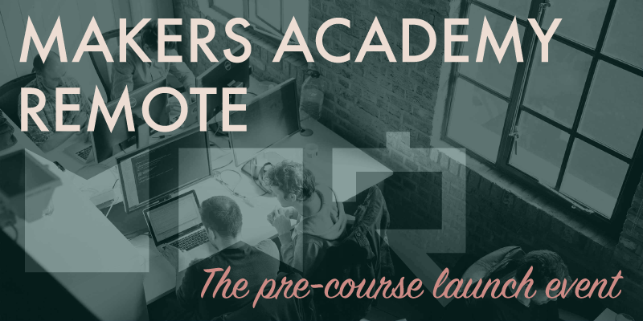

Before attending the Makers Academy course on a full-time basis, all students are required to complete a four week part-time pre-course, which will teach the fundamental skills that will be needed for students to get the most from the course. As I sit and write this post it's the evening of December 7th, and the pre-course launch event for my cohort has just finished. What better time could there be to document it than while it's still fresh in my mind?
Chatting with a maker
At the start of the evening Ptolemy from the Makers Academy team sent out links on Slack to three separate Google Hangouts, each providing access to a video call with a current Makers Academy student, the idea being for the new students to ask questions of the current students, for around fifteen minutes.
Questions could be entered in to a chat box for our allocated student, an on-site student with three weeks' course experience, to answer. Our student did a good job of explaining things to us, although he didn't appear entirely comfortable speaking to a screen full of faces, and who would be? Aside from a few awkward pauses while there were no questions ready to be answered, the conversation ran smoothly. However I've resolved that if I'm ever in that same question-answering situation for myself that I'll prepare a selection of conversation topics for myself, in the event that questions don't flow readily from the group.
About the course
Soon our chat was over, and Ptolemy directed us to another link on Slack. This time we were taken to a YouTube live feed, a camera pointed at Ptolemy and Ana, also from the Makers Academy team. Ptolemy and Ana were stood before the assembled on-site cohort, although we had no view of those students.
Ptolemy initiated a round of introductions, and in what seems to be a Makers Academy tradition they each introduced one another rather than themselves. It was interesting to hear that Ptolemy only attended the Makers Academy course himself a year ago, and is now working there as a coach. Ana joined Makers Academy as its very first employee, and after working in an administrative role has since attended the course herself, and will soon also begin working as a coach.
Ptolemy then began the main body of the presentation, which took the form of a series of slides describing in broad strokes what to expect from the pre-course. We were told how of the four weeks, week one will consist of learning about text editors, the Git version control system and the Unix command line, while weeks two to four will be based solely around learning the basics of the Ruby programming language. Each Friday at 5pm a weekend challenge will be released, which will need to be completed and submitted via GitHub by the following Monday morning.
We were told at this early stage how important it is to ask for help when necessary, and not to get caught up on any particular problem for too long. Assistance can be sought by raising an issue in GitHub, to which fellow students and coaches can respond, or of course by asking others on Slack.
Ana then explained the importance of personal wellbeing throughout the course. Suggestions included defining and sticking to a regular working pattern, and trying to make some amount of progress each day, no matter how small, to keep the momentum going. We were then given some suggestions for reading material regarding mental wellbeing, Mindset by Carol Dweck and Love yourself like your life depends on it by Kamal Ravikant. The importance of meditation was also extolled, as was the Headspace app, which is designed to assist with meditation.
Blogging
Ana suggested that all students keep a blog throughout the course, because blogging serves as an effective brain-dumping exercise, helping to structure your thoughts. I know that others at Makers Academy also suggest blogging because it's a great way to build your personal brand, so I've already begun writing these early blog posts as plain text files, before I even have a blog to post them to. It was mentioned that at the end of the course a cash prize will be awarded to the best student blog – so that offers more incentive if it's needed.
The end of the night
Ptolemy then took the to mic again to discuss a handful of techniques to help us start thinking like software developers, with regards to breaking down large problems in to smaller ones. Finally it was explained that we'd receive further details of the pre-course soon via email, and then the talk was at its end.
As for the on-site students, they went to the local pub where Makers Academy bought the first round of drinks. As for us remote students we couldn't do that online, so were left in our Slack channel. Many of us stayed for a short while, getting to know one another, some stating when they'd be available for pair coding during the pre-course, etc. It felt like there was a genuine buzz of anticipation, even in the text-based medium of our Slack channel, and I left the event very excited for what's to come in the months ahead.